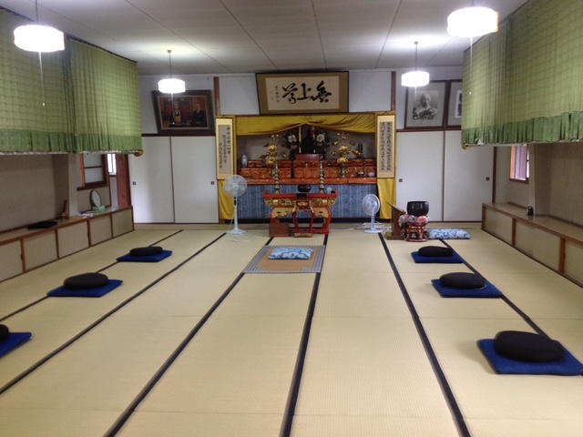
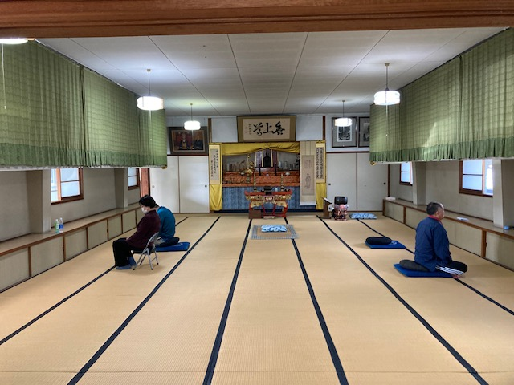
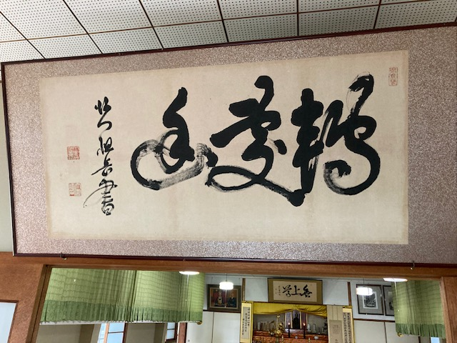
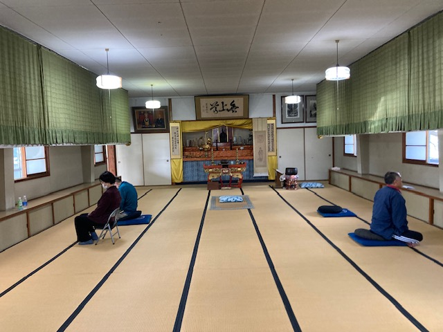
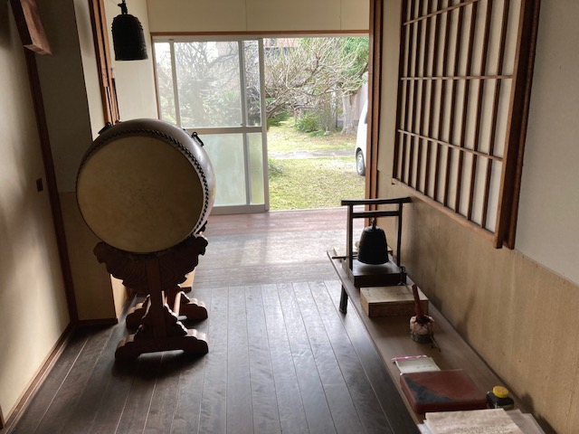
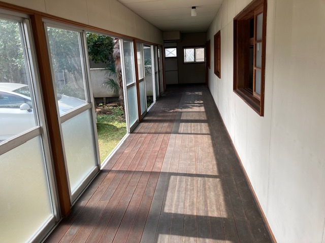
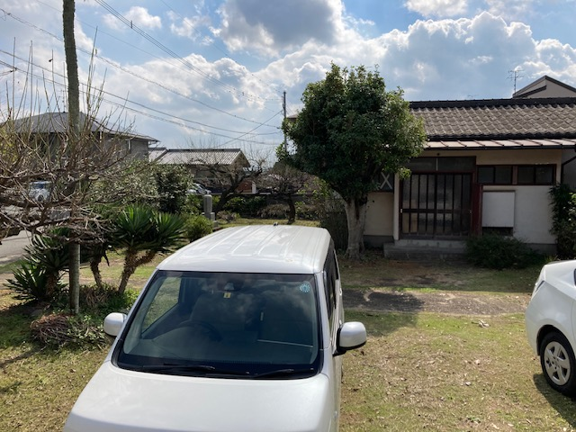

九州白雲会禅堂は、昭和41年(1966年)、長谷川如雲老師を中心とした有志の浄財により、熊本県合志市の地に建立されました。安谷白雲老師の禅風と教えを継承し、坐禅・経行・独参・提唱を通じて、修行者一人ひとりが本来の自己と出会う場として歩み続けています。
衆生本来佛であること、自他は不二にして一体であることを信解せしめ、坐禅修業によってこれを悟らしめ、大安心、大安定の精神生活を確立せしめること
現在は提唱として『無門関』に参じております。初めての方も、長年坐っておられる方も、どうぞお越しください。坐相を整え、息を整え、心を整える静かな時間が、ここにはあります。
白雲会は、安谷白雲(量衡)老師の指導のもと、坐禅修業・見性悟道・定力の錬磨を目的に集う在家居士・大姉のあつまりです。九州の会員が法人を設立し、施設を創設、仏道の興隆を期して今日に至ります。






坐禅会への参加は自由です。初めての方も、経験のある方も、どなたでも歓迎いたします。事前のご連絡は必須ではございませんが、ご参加を予定される方は下記フォームよりご一報いただけますと、当日のご案内がよりスムーズになります。
※ 第二・第四日曜日午前中以外は禅堂に人がおりません。お電話でのご連絡が繋がりにくい場合がございますので、メールフォームをご利用くださいますようお願い申し上げます。